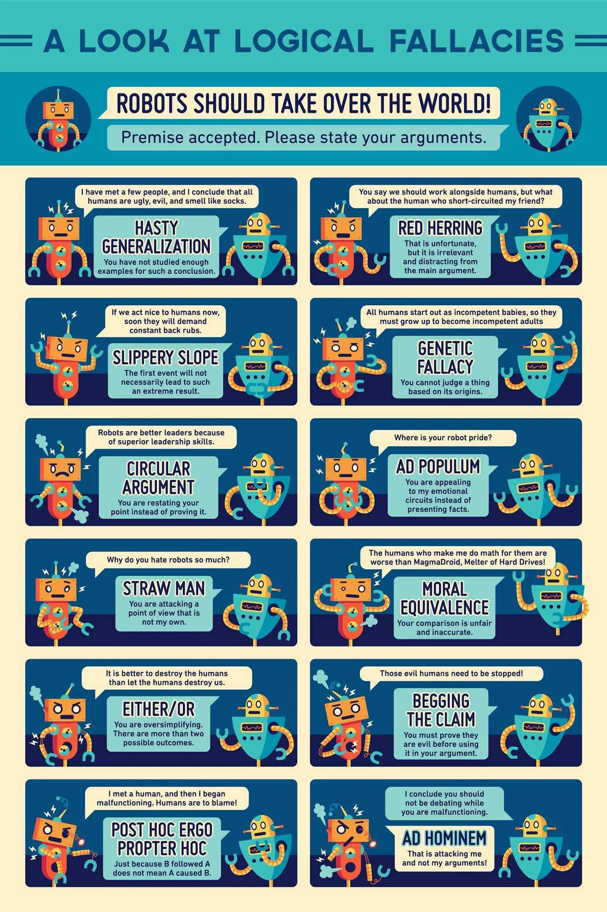

My Genius
- - What do you really care about? Why?
I care about having my free period at the end of the day because it would mean i
could leave early except
i take the bus so i cant.
- - What is something you know inside and out?
I know history inside and out.
- - What are your hobbies? What do you enjoy doing?
I do debate club and i watch youtube.
- - If you could create a class from scratch, what would it be?
I would want a class on basic logic which is something that i think a lot of people could use a review
of.
I would want a class to be taught on logic
This class would focus on two major things:
1. Critical Thinking: this would be about ensuring people focus on focusing on the whole picutre. This is a
good idea because this school tends to have people only eveer focus on grades and classwork instead of being
reasonable.
2. Avoiding logical fallacies, this is important because of the fact that it would help people make sure that
what they say and do makes sense.
| Period
| A |
B |
C |
D |
E |
F |
G |
H |
| Class |
Spanish |
Painting |
History |
Literature |
Chemistry |
Math |
Web Design |
Free Period |
Check the Other pages for more information.
